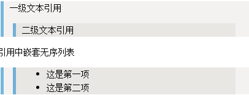
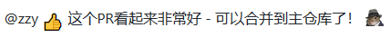

Markdown指南
Markdown指南-https://markdown.budshome.com，基础内容译自GitHub官方Mastering Markdown文档。
💥 笔者进行了结构重组、实例中文化、补充了官方文档未提及的Markdown语法、增加了Markdown和HTML融合应用，以及Markdown工具链等内容。
本文目的为整理Markdown知识，希望可以帮助到读者。
声明
水平有限，错漏难免。若有指教，请发issue到GitHub，或者直接联系。
电子邮箱：linshi@budshome.com；微信：cd-zzy；QQ：9809920。
💥 笔者无意侵犯GitHub及任何人的权利和利益，故若有不适，请联系我。
Markdown介绍
Markdown是一种在web上设置文本样式的方法：使用普通文本编辑器编写的标记语言，通过简单的标记语法，它可以使普通文本内容具有一定的格式。
你可以使用Markdown对文档的展示格式进行排版：如将文本格式化为粗体或斜体、添加图像，以及创建列表等。大多数情况下，Markdown只是一些普通文本加上一些非字母字符，比如 # 或者 *。
Markdown文档可以通过一些如mdBook、gitBook等应用转换为HTML、PDF、DOC等格式，提供给不同的应用场景。
Markdown的语法简洁明了、学习容易，而且功能比纯文本更强，因此使用非常广泛。如GitHub、WordPress等，使用Markdown对平台上的写作形式进行样式化，提供了Markdown文档直接展示的功能。比如你可以在GitHub的大部分场景中使用Markdown：
- 扩展名为
.md或者.markdown的文件； - 对Issues和拉取请求的评论；
- Gists；
若希望了解更多在GitHub中编写Markdown的信息，请查阅GitHub帮助文档：在GitHub上写作（Writing on GitHub）。
内容要点
- Markdown格式如何使样式的协作开发变得容易
- Markdown与传统格式化处理的不同之处
- 如何使用Markdown格式化文本
- 如何利用GitHub提供的Markdown自动渲染机制
- 如何应用GitHub对Markdown的扩展
Markdown语法和实例
本章节语法和实例包括Markdown基础语法和实例，以及GitHub风格Markdown（GitHub Flavored Markdown，简称GFM）的语法扩展和特性实例。
GitHub风格Markdown（GitHub Flavored Markdown，简称GFM）是GitHub官方为了在GitHub.com上更容易地进行文本内容格式化展示，而提供的一组Markdown语法扩展及特性支持。
💥 目前，GitHub风格Markdown（GitHub Flavored Markdown，简称
GFM）已经成为Markdown的通用标准，兼容于各种Markdown工具链和各类Markdown展示支持网站。
GFM对于Markdown的语法和特性有些为语法扩展，有些为新增特性。已经成为通用标准，各类Markdown工具链和展示网站兼容支持很完善，因此合并介绍。
- 标题（Headers）
- 字体（Emphasis）
- 列表（Lists）
- 图像（Images）
- 链接（Links）
- 锚点（Anchors）
- 引用（Blockquotes）
- 代码（Code）
- 注释（Comment）
- 表格（Tables）
主要应用于GitHub的Markdown扩展——
标题（Headers）
Markdown中共有6级标题，从 #、##、依次类推到 ######。
1. 实例代码
# 一级标题
## 二级级标题
### 三级标题
#### 四级级标题
##### 五级标题
###### 六级标题
2. 呈现效果
字体（Emphasis）
- 斜体：用
*或者_包裹文本进行 斜体 格式化。 - 粗体：用
**或者__包裹文本进行 粗体 格式化。 删除线：用~~包裹文本进行删除线格式化，部分工具和网站不支持展示。
** 或者 __、* 或者 _，以及~~ 可以 组合使用。
1. 实例代码
*这行文本是斜体*
_这行文本是斜体_
**这行文本是粗体**
__这行文本是粗体__
_这行文本是 **粗体** + 斜体_
~~_这行文本是 **粗体** + 斜体_ + 删除线~~
2. 呈现效果
这行文本是斜体
这行文本是斜体
这行文本是粗体
这行文本是粗体
这行文本是 粗体 + 斜体
这行文本是 粗体 + 斜体 + 删除线
列表（Lists）
列表分为无序列表、有序列表，以及任务列表。
无序列表
无序列表用-定义，下级列表相对于上级 缩进空格 >= 2
1. 实例代码
- 第一节
- 第二节
- 第一条（缩进空格2个）
- 第二条
2. 呈现效果
- 第一节
- 第二节
- 第一条（缩进空格2个）
- 第二条
有序列表
有序列表数字.定义，下级列表相对于上级 缩进空格 > 2
1. 实例代码
1. 第一节
1. 第二节
1. 第三节
1. 第一条（缩进空格3个）
1. 第二条
2. 呈现效果
- 第一节
- 第二节
- 第三节
- 第一条（缩进空格3个）
- 第二条
任务列表
任务列表是一个任务进度指示器，也可使用与拉取请求。
注：任务列表仅在部分Markdown工具软件或者网站支持展示，如GitHub；不是全部，使用前需要验证是否被支持。
1. 实例代码
- [x] 表情符号、引用API，以及<del>标签</del>已被支持。
- [x] 语法分析已经完成。
- [x] 此项已完成。
- [ ] 此项未完成。
2. 呈现效果

图像（Images）
格式：Format: 
1. 实例代码

2. 呈现效果
链接（Links）
Markdown中可对url链接自动识别，但有些Markdown工具不支持（GitHub支持自动识别）。
若需指定url链接文本，格式：[文本](url)。
1. 实例代码
[Markdown指南](https://markdown.budshome.com)
https://markdown.budshome.com
markdown.budshome.com
2. 呈现效果
锚点（Anchors）
格式：[锚点文本](#锚点链接)。需要注意如下几点：
- 欲定位的锚点链接必须是标题，即
#、###等定义的6级标题； - 不管标题大小写，锚点均为小写；
- 可以使用中文做锚点，中文锚点需要省略
（、、等中文标点符号。
1. 实例代码
标题：## 锚点（Anchors）
锚点：[锚点（Anchors）](#锚点anchors)
2. 呈现效果
引用（Blockquotes）
Markdown中通过>实现引用。引用可以多级嵌套：>>,>>>；也可以和其它Markdown语法嵌套，比如无序列表。
1. 实例代码
> 一级文本引用
>> 二级文本引用
引用中嵌套无序列表
>> * 这是第一项
>> * 这是第二项
2. 呈现效果
不同工具和输出呈现效果有差别，如下两种——
Markdown预览呈现

输出HTML呈现
一级文本引用
二级文本引用
引用中嵌套无序列表
- 这是第一项
- 这是第二项
代码（Code）
Markdown中代码格式化可以通过三种方式：
- 行内式：通过一对 ` 包裹单行代码实现；
- 代码块：通过一对 ``` 包裹实现，可以指定代码的编程语言，如
Python、JavaScript、Rust等，且支持语法高亮； - 缩进式：通过缩进
>=4空格实现，部分支持语法高亮。
1. 实例代码
行内式代码：`import os, sys`
代码块（无需缩进）：
``` Python
import os, sys
sys.path
print(os)
```
缩进式：
if (isAwesome){
return true
}
2. 呈现效果
行内式代码：import os, sys
代码块（无需缩进）：
import os, sys
sys.path
print(os)
缩进式：
if (isAwesome){
return true
}
注释（Comment）
Markdown中注释可以通过二种方式实现：
- HTML注释：用
<!--...-->标签来实现注释； - HTML标签：用HTML标签显示属性
style='display: none'标签来实现注释； - HACK方法：用
Markdown解析原理来实现注释。
1. 实例代码
HTML注释 <!--...-->：
<!-- 我是单行注释，不会在浏览器中显示。-->
<!--
我是多行，
段落注释，
不会在浏览器中显示。
-->
HTML标签实现注释：
<div style='display: none'>
我是注释，
多行段落，
不会在浏览器中显示。
</div>
HACK方法注释：
[](我是注释，不会在浏览器中显示。)
[注释关键字]:(注释描述。)
[#]:<> (我是注释，不会在浏览器中显示。)
[#]:# (我是注释，不会在浏览器中显示。)
[注释]:<> (我是注释，不会在浏览器中显示。)
[注释]:# (我是注释，不会在浏览器中显示。)
[注释]:// (我是注释，不会在浏览器中显示。)
[//]:<> (我是注释，不会在浏览器中显示。)
[//]:# (我是注释，不会在浏览器中显示。)
2. 呈现效果
表格（Tables）
- 通过字符组合单元格，用管道分隔符
|来分割单元格；无需上下对齐。 - 通过连字符
-来声明表头，仅第一行底部需要。 - 通常情况下，表格默认居中。
1. 实例代码
表头一 | 表头二 | 表头三
------- | ------ | ------
一行单元格一 | 一行单元格二 | 一行单元格三
二行内容一 | 二行内容二 | 二行内容三
三行描述部分一 | 三行描述部分二 | 三行描述部分三
2. 呈现效果
| 表头一 | 表头二 | 表头三 |
|---|---|---|
| 一行单元格一 | 一行单元格二 | 一行单元格三 |
| 二行内容一 | 二行内容二 | 二行内容三 |
| 三行描述部分一 | 三行描述部分二 | 三行描述部分三 |
主要应用于GitHub的Markdown扩展
SHA引用
GitHub仓库中，任何对提交（git commit）的SHA-1散列（哈希值）的引用都将自动转换为指向GitHub上提交的链接。
16c999e8c71134401a78d4d46435517b2271d6ac
mojombo@16c999e8c71134401a78d4d46435517b2271d6ac
mojombo/github-flavored-markdown@16c999e8c71134401a78d4d46435517b2271d6ac
Issue引用
在GitHub仓库中，任何涉及Issue或拉请求的数字都将自动转换为链接。
#1
mojombo#1
mojombo/github-flavored-markdown#1
用户通知（@mentions）
在GitHub仓库的Issues中，@符号后输入用户名，就会通知此用户来查看评论。GitHub中称此为@mention。
不仅可以通知用户，还可以@通知所在组织中的团队。
表情符号（Emoji）
GitHub支持表情符号，格式为：:EMOJICODE:。
@zzy :+1: 这个PR看起来非常好 - 可以合并到主仓库了！ :shipit:
在GitHub中，会渲染为如下效果——

GitHub支持的表情符号很多，详细请查看表情符号清单。
Markdown和HTML融合
Markdown中，可以直接嵌入HTML内容，包括：tags，css等。
嵌入HTML-tags
1. 实例代码
<div style="border:1px solid;margin:0px;padding:0px 0px 0px 15px">
<strong>1.做个耐心的聆听者。</strong>
2.永远不要流露出厌烦的表情。
<del>3.等待，直到他人表明观点，然后附和他们。</del>
4.让他人表明宗教立场，而后发表同样的观点。
<del>5.可以暗示涉及“性”的话题，但若对方没有表示出强烈的兴趣，就不要继续下去。</del>
6.永远不要谈论疾病，除非对方特别关心。
7.永远不要刺探个人隐私，对方最终会告诉你一切。
8.永远不要自吹自擂。
9.拒绝邋遢。
10.永远别喝醉。
<br />
</div>
2. 呈现效果
1.做个耐心的聆听者。
2.永远不要流露出厌烦的表情。
3.等待，直到他人表明观点，然后附和他们。
4.让他人表明宗教立场，而后发表同样的观点。
5.可以暗示涉及“性”的话题，但若对方没有表示出强烈的兴趣，就不要继续下去。
6.永远不要谈论疾病，除非对方特别关心。
7.永远不要刺探个人隐私，对方最终会告诉你一切。
8.永远不要自吹自擂。
9.拒绝邋遢。
10.永远别喝醉。
嵌入CSS
1. 实例代码
<div style="border:1px solid;margin:0px;padding:0px 0px 0px 15px">
<style type="text/css">
.indent-background {
text-indent:2em;
background: red;
}
</style>
<div class="indent-background" style="margin:10px">
生活赋予我们的一种巨大的和无限高贵的礼品，这就是青春：充满着力量，充满着期待、志愿，充满着求知和斗争的志向，充满着希望、信心的青春。
</div>
<div align="center" style="padding:10px">
<b><i>保尔·柯察金（Павел Корчагин, 英文：Pavel Korchagin）</i></b></div>
</div>
2. 呈现效果
Markdown工具链
目前，使用Markdown进行书籍或者文章编写的工具很多，且大多开源，基础功能免费。概括来说，分为命令行工具和编辑器两种，下面介绍一些受众较多的工具链。
命令行工具
mdBook
本指南即采用mdBook编写，在此强烈推荐。
💥 mdBook的使用教程，可访问同步最新开发版的中文用户指南；也可以访问官方用户指南，但和开发版本相比，内容稍有延迟。
mdBook是一个命令行工具，可以使用Markdown文件创建书籍。采用Rust语言编写，运行速度非常快。
可以输出HTML、PDF、eBook等格式的电子书，功能强大，使用方便。
mdBook提供更低层次API的封装，除了编写书籍、文档外，还可以由Rustdoc生成API文档。
mdBook是免费的开源软件，可以在GitHub上找到源代码。开发团队非常活跃，响应和维护都很积极，使用问题和Bug可以发布在GitHub Issue跟踪器。
gitBook
gitBook是一个基于Node.js的命令行工具，开发周期长，比较成熟。支持Markdown和AsciiDoc两种语法格式，可以输出HTML、PDF、eBook等格式的电子书。
gitBook是开源软件，可以在GitHub上找到源代码。
编辑器
Markdown编辑器众多，简单易用。
- 通过安装插件支持Markdown开发：vsCode、vim、sublime text、JetBrains IDE和Eclipse IDE等。
- 专用于支持Markdown开发：typora、macDown、bear、markdownPad、markdownX、Atom、简书、CSDN以及GitBook自家的GitBook Editor等等。
下表是部分较受欢迎的、专用于支持Markdown开发的编辑器，仅供参考。
| 名称 | 说明 | 运行平台 | 是否免费 |
|---|---|---|---|
| gitBook Editor | 和gitBook无缝集成的编辑器 | macOS、Windows、Linux | 免费 + 收费 |
| markdownPad | Windows上强大的编辑器 | Windows | 免费 + 收费 |
| bear | 功能齐全的编辑器 | iPhone、iPad、macOS | 免费 + 内购 |
| typora | 所见即所得的编辑器 | macOS、Windows、Linux | 免费 |
| macDown | macOS上强大的编辑器 | macOS | 免费 |
| markdownX | Android上的轻量编辑器 | Android | 免费 |